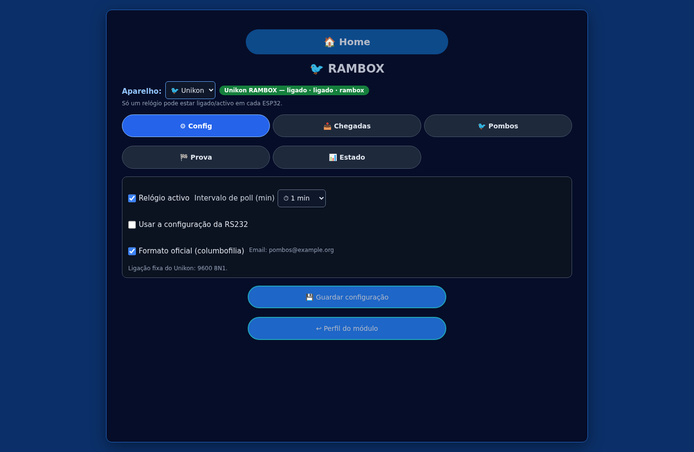
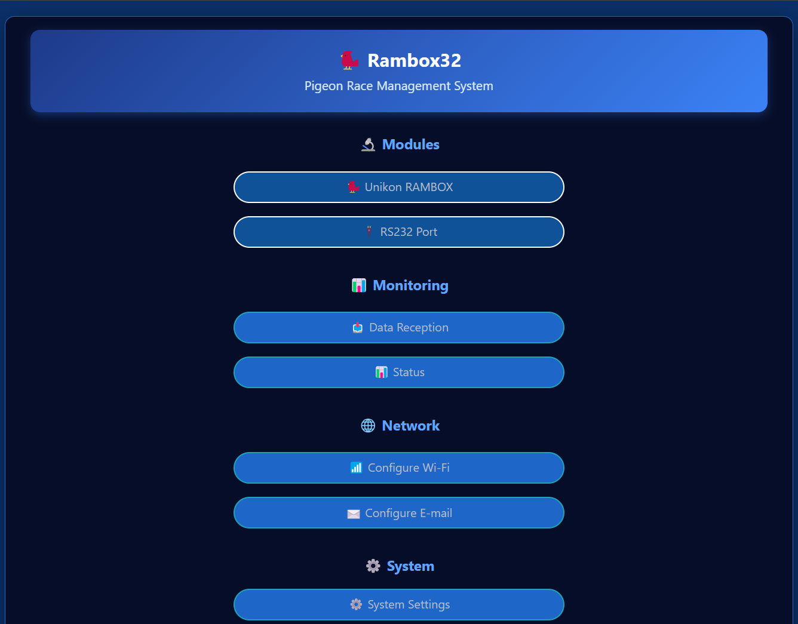
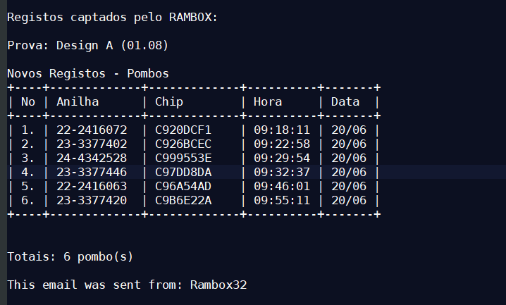

What it does
- Unikon clocks — Champ and Profi, polled continuously; arrivals, races and loft data are logged. The clock is read-only by default and a write is always explicit.
- Bricon loft modules — experimental: fancier, pigeons, flights, band table and timer. Not yet validated against real hardware.
- One module at a time — Unikon or Bricon; the RS232 profile switches with the selection.
- Email on arrival — SMTP with TLS, HTML tables with computed column widths so results stay aligned.
- Live panel — arrivals, RS232 state, machine status and OTA updates on one page.


Install
- Flash
firmware.binover USB with the WebFlasher, or update an existing unit at/ota. Full guide: how to flash. - Join
NODE32-HUB(password12345678), open192.168.4.1, log in asroot/root. - Set Wi-Fi, then the SMTP account — without email, arrivals only show on the page.
- On the RAMBOX page choose the timing module and wire the DB9 as below.
DB9: pin 9 must be jumpered to pin 5
The Unikon clock only transmits while it sees that jumper: pin 9 is the signal it watches, and pin 5 is ground. Without it the bus stays silent and the page shows no data — this is the first thing to check when the clock does not answer.
| ESP32-S3 | MAX3232 | DB9 (Unikon) |
|---|---|---|
| GPIO16, UART2 RX | R1OUT | — |
| GPIO17, UART2 TX | T1IN | — |
| — | T1OUT | pin 2, TX |
| — | R1IN | pin 3, RX |
| GND | GND | pin 5, GND |
| — | — | pin 9 jumpered to pin 5 |
Line settings: 9600 baud, 8N1, XON/XOFF enabled. If the page still shows nothing after the jumper:
- Check the jumper with a multimeter across pins 5 and 9 — continuity, not just solder.
- Confirm RX and TX are not swapped: pin 2 is the clock's TX and must reach the MAX3232's R1IN.
- Open the monitor page and look for raw frames while the clock is polled; if they appear, the wiring is right and the problem is the module selection.

Hardware
- Board — ESP32-S3 N16R8.
- RS232 — MAX3232 transceiver on UART2 (GPIO16 RX, GPIO17 TX), 9600 8N1.
- DB9 — the Unikon cable, with the jumper described above.
- Optional — SSD1306 OLED for local status.